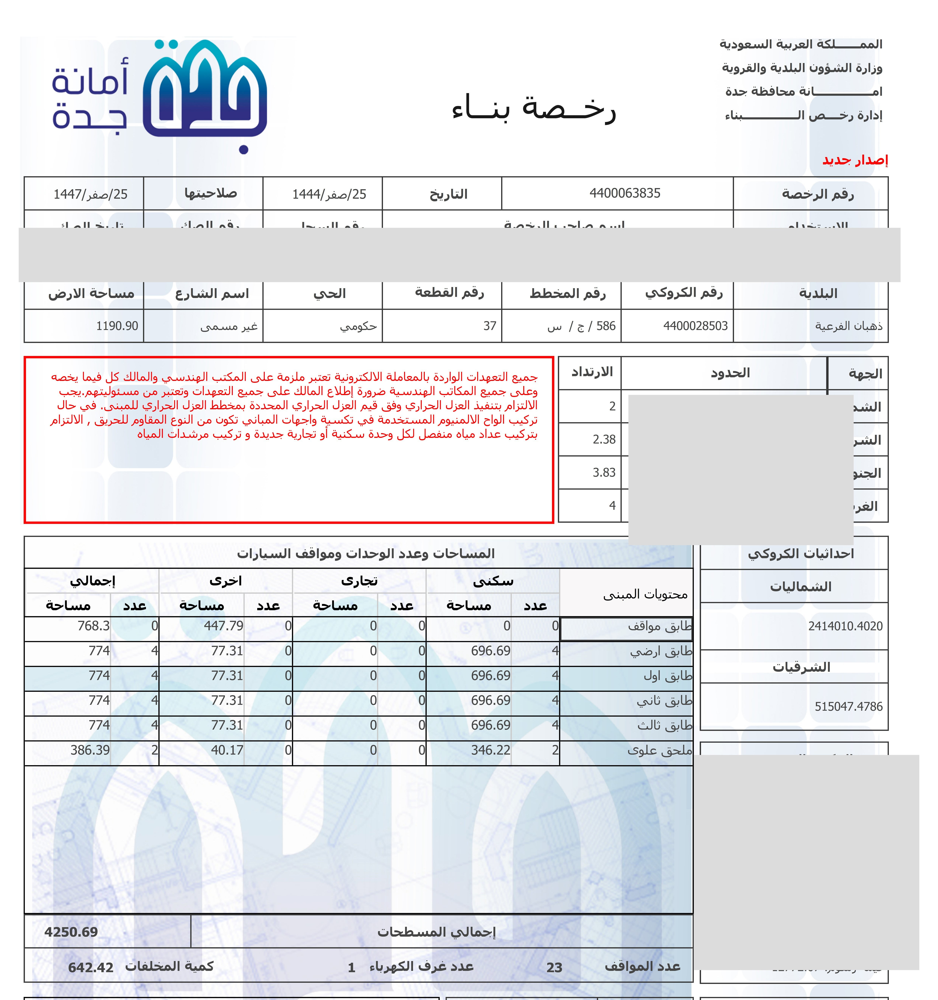
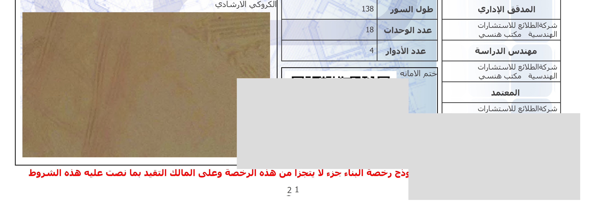
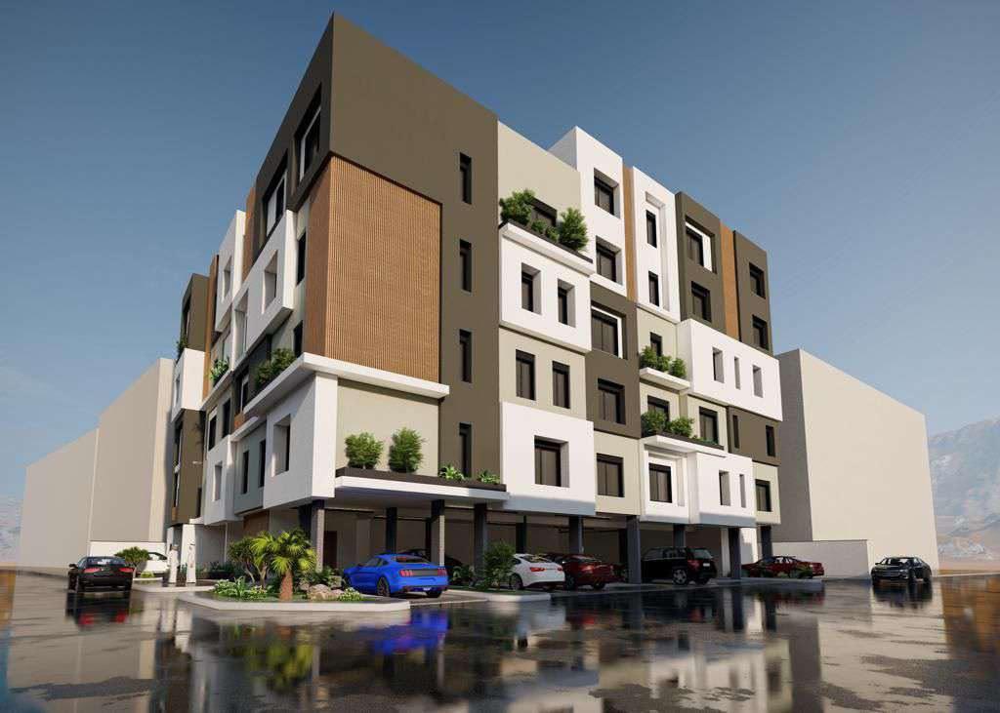
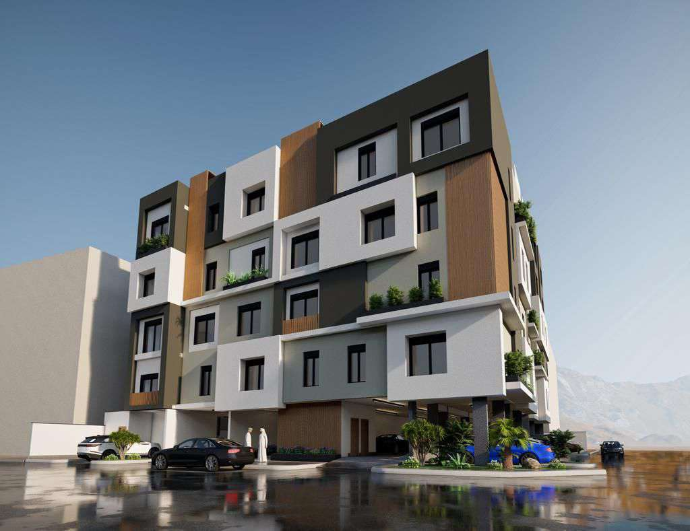
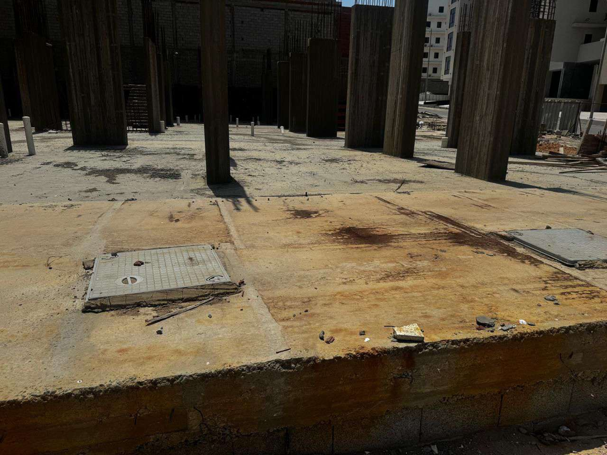
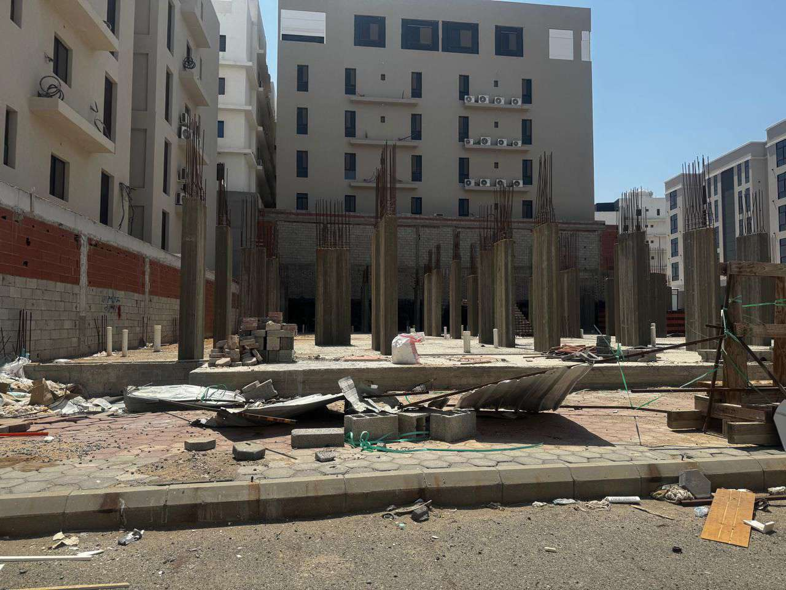
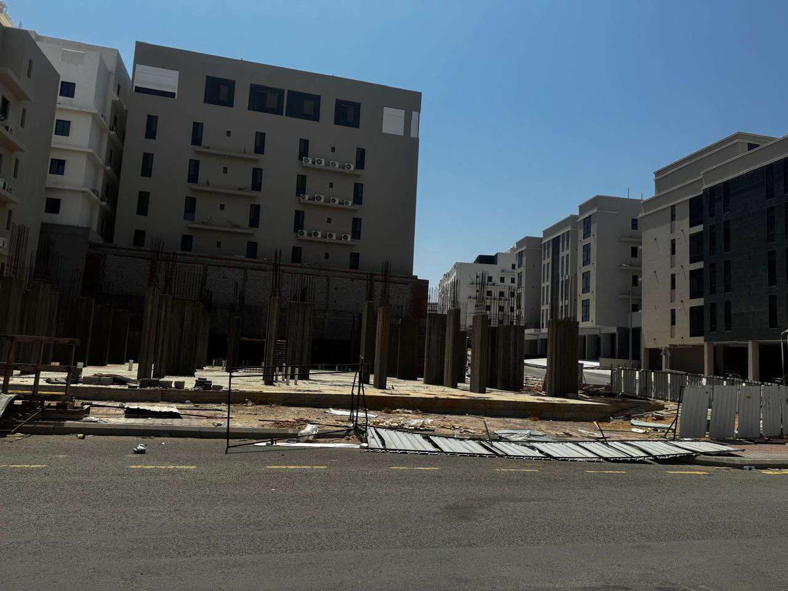
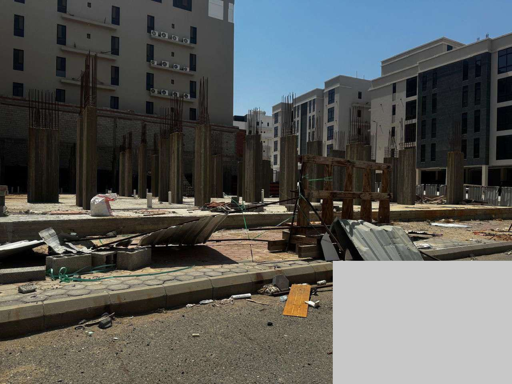

Saudi Arabia's real estate investment and development sector is undergoing a radical transformation, making it one of the most dynamic and mature sectors in the region. The market no longer relies on speculative behavior; it is now driven by genuine demand dynamics, massive development projects, and measurable shifts in consumer purchasing power.
While rental yield represents annual operating income from leasing units, the primary investor return in the asset revitalization model comes from strategic sale. After completing the finishing works and increasing the market value of the distressed building, the investor achieves a capital multiple of 2.5x–4x when the company exits the project in years 5–7, alongside an expected IRR of ~18.5% over a 10-year horizon.
Major cities record exceptional rental yields compared to global markets. The average rental yield in Riyadh is approximately 8.89%, and in Jeddah about 7.89% — clearly surpassing global capitals such as London (3–4%) and Singapore (2–3%).
Much of modern development is centered around environmentally friendly projects and smart cities (such as NEOM, the Red Sea, and major developers like Roshn), reshaping the concept of quality of life and creating new investment opportunities beyond traditional models.
Amid this massive growth, the urgent need to revitalize distressed buildings is clear — demand for ready units exceeds supply, and mega-projects require years to complete. Our model fills this gap quickly and at a lower cost.
| Axis | Reality | Market Impact |
|---|---|---|
| Financing Cost | "Sakani" programs and easy financing empower families | Increased demand for mid-size units (70–120 m²) |
| Price Gap | Price surges in North Riyadh outpace salary growth | Shift toward smaller, more efficient spaces |
| Internal Migration | Global companies attracted to capital and major cities | Sustained demand for residential and office real estate |
| Rent vs Buy | Booming rental market and attractive yields | Some families prefer renting during price surges |
Riyadh — Growth Axis Toward the North:
Jeddah — Coastal & Central Development Axis:
The Red Sea project is one of the largest tourism and real estate developments in the world, reshaping demand for coastal real estate in Saudi Arabia and opening new investment opportunities for assets near tourist zones.
The new non-Saudi ownership system opens wide horizons for foreign investment inflows, with clear controls: legal residency + official approval + clean security record.
The Real Estate Asset Revitalization Company was founded on the vision of reviving distressed buildings without needing to purchase land, through partnership (Mudarabah/Muqasah) contracts with the owners of these buildings. The model covers the costs of completing finishing works and marketing the units, then sharing profits with the original owner.
You are looking for a realistic, well-studied investment opportunity in a real estate market with thousands of underutilized opportunities. Our model does not require buying land for millions — we invest in reviving what already exists. Our core competitive advantage is not finishing or technology, but the ability to access distressed buildings before competitors through a network of relationships with asset owners, lawyers, liquidators, and real estate brokers.
Has your building been stalled for years? Are finishing costs beyond your means? Not sure how to sell it? We are the solution. The Real Estate Asset Revitalization Company bears all finishing, marketing, and sales costs — and you remain the building owner. Upon sale, we split profits according to a clear, documented contract. No debt, no loans, no risk to you.
A closed joint-stock company, licensed by the Ministry of Commerce and the Real Estate General Authority (REGA), under the Saudi Companies Law. This legal form enables capital raising from shareholders while maintaining management flexibility and fast decision-making.
| Item | Amount (SAR) | Notes |
|---|---|---|
| Authorized Capital | 200,000,000 | Divided into 40,000 shares |
| Nominal Value per Share | 5,000 | — |
| Actual Value per Share | 5,650 | Includes SAR 650 (incorporation + marketing commissions + issue premium) |
| Additional Total | 26,000,000 | 40,000 shares × SAR 650 |
| Total Target Investment | 226,000,000 | — |
| Item | Cost (SAR) |
|---|---|
| Ministry of Commerce + Chamber License | 5,000 – 10,000 |
| REGA License | 30,000 – 50,000 |
| Legal Consultations | 200,000 – 350,000 |
| Office Setup + Furniture + Systems | 100,000 – 200,000 |
| Launch Marketing | 50,000 – 100,000 |
| Total | 385,000 – 710,000 |
| Use | Amount (M SAR) | % | Timeline | Notes |
|---|---|---|---|---|
| Project Investment (Purchase + Finish + Resale) | 150 | 66% | Years 1–3 | Buy distressed buildings + finish + resell |
| Working Capital (Operations) | 40 | 18% | Over 5 years | Salaries, rent, marketing, admin |
| Smart Technology & Systems | 10 | 4% | Year 1 | ERP, CRM, Digital Twin, project management |
| Setup + Marketing + Relations | 15 | 7% | Years 1–2 | Licenses, office setup, campaigns |
| Emergency & Liquidity Reserve | 11 | 5% | Always available | For delay or unexpected cost risks |
| Total | 226 | 100% | — | — |
The SAR 226 million is not deployed at once. Drawdowns are organized into 4 tranches tied to specific milestones:
Because a smart investor does not inject hundreds of millions into a theoretical model. A proven track record — before/after photos + signed sales contracts + real numbers — justifies the larger expansion decision. The loss is limited (SAR 25M) and lessons learned prevent losing SAR 226M.
| Item | Value | Notes |
|---|---|---|
| Capital | SAR 25,000,000 | Enough for 3–5 projects + 12 months operations |
| Team | 8–10 employees | Lean structure, no admin bloat |
| Projects | 3–5 projects | Category (C) small + Category (B) medium |
| Duration | 12–18 months | From contracting to sale of last unit |
| Financial Target | SAR 1.5–2.5M profit | Net after all costs |
| Operational Target | Documented success record | Contracts + photos + client testimonials |
| Qualitative Priority | Database of +100 classified assets | Ownership, violations, mortgages, valuation |
We succeed if one of the following is achieved:
We reassess if:
Conclusion: There is a real opportunity in distressed buildings, especially with declining new mortgage activity, but the market is not easy — buyers are more aware, and sales cycles are longer.
| Segment | Description | Estimated Size |
|---|---|---|
| Distressed Building Owners | Residential buildings stalled at 60–80% completion | Thousands of buildings in Jeddah and Riyadh alone |
| Return-Seeking Investors | Prefer ready-to-move-in units | Large market |
| Sakani Program Beneficiaries | Seek affordable ready housing | Millions of beneficiaries |
| Competitor Type | Strengths | Weaknesses |
|---|---|---|
| Major Developers | Massive capital, strong reputation | Not interested in small distressed buildings |
| Brokerage Firms | Marketing expertise | Lack integrated revival model |
| Individual Developers | Negotiation flexibility | Lack organization and quality control |
The Real Estate Asset Revitalization Company operates in the field of reviving distressed residential and commercial buildings without needing to purchase the land or building. This is achieved through a strategic partnership with the original owner, where the company bears all finishing, management, and marketing work, then shares profits with the owner.
| Activity | Detailed Description | Value Added |
|---|---|---|
| Inspection & Evaluation | Comprehensive engineering inspection + legal review + finishing cost estimate + financial feasibility study | Risk reduction before entering the project |
| Design & Permits | Preparation of architectural and mechanical designs + issuance of municipal permits | Accelerating government procedures |
| Finishing & Supervision | Contractor management + daily supervision + quality execution + final handover | Ensuring final product quality |
| Marketing & Sales | Marketing materials + unit showcasing + client reception + closing sales | Reducing sales time and achieving best price |
| Handover & Settlement | Unit delivery to buyers + ownership transfer + profit sharing with owner | Systematic project closure |
| Traditional Developers | Asset Revitalization Company |
|---|---|
| Buy land for millions | Do not buy land (Mudarabah) |
| Build from scratch (18–36 months) | Only complete finishing (10–12 months) |
| Bear land price appreciation risk | No land risk |
| Require massive capital | Require moderate capital |
| Depend on bank loans | Less dependent on bank loans |
| Contribution Type | Owner Provides | Company Provides | Profit Share | When to Use |
|---|---|---|---|---|
| Full Mudarabah | Land + existing building | 100% finishing cost + management + marketing | 50/50 or 60/40 (company) | Most common — owner lacks liquidity |
| Partial Mudarabah | Land + building + part of finishing cost | Remaining finishing + management + marketing | 40/60 or 30/70 (company) | Owner has part of capital |
| Unit-Based Mudarabah | Land + building | 100% finishing + management + marketing | Company takes share of ready units | Owner wants to keep some units |
| Management-Only Model | Land + building 100% + finishing cost | Management + supervision + marketing + sales | Management fee 8–12% of finishing cost | Owner has capital but needs expertise |
| Model | Description | Expected Margin |
|---|---|---|
| Mudarabah Model | Profit sharing with owner | 40–50% of net profit to company |
| Management Model | Manage finishing for management fee | 8–12% of finishing cost |
Based on market review and owner/investor requirements, the business model has been enriched with four new profit-sharing and contractual mechanisms. These mechanisms give the company greater flexibility, reduce capital risk, and accelerate cash turnover.
Instead of a fixed 50/50 ratio, each party's share is determined based on the value of their contribution to the final asset. Value is determined through:
Practical Example: Building market value after appraisal = SAR 3,000,000. Revival and finishing cost = SAR 1,000,000. Total final asset value = SAR 4,000,000.
The ratio can be adjusted with a management premium of 5–10% for the company to cover management, marketing, and operational risk.
When to use: When the owner rejects fixed ratios, or when the existing building value is relatively high compared to revival cost.
When the owner rejects valuation or proportional sharing, the company uses a safer model that guarantees capital recovery first and then a clear profit margin.
Mechanism:
Practical Example: Revival cost SAR 1,000,000; total sales SAR 4,000,000; net profit after fees SAR 2,500,000.
When to use: When the owner is sensitive to sharing ownership or asset value.
The company recovers its rights from the first stages of unit sales (apartments, villas, shops, etc.) before the owner. This mechanism gives the company:
Priorities can be arranged so that the first 20–30% of unit sales go to recovering the company's cost, then profit distribution begins.
Upon agreement with the owner, a separate subsidiary company (Special Purpose Vehicle — SPV) is established under the parent company. The owner contributes the property as an in-kind share, while the parent company contributes completion costs as a cash share. Every project is placed in a separate company, regardless of size. The main objective: avoid commingling assets belonging to different project owners.
A) Converting Asset and Costs into Shares
The property value plus completion costs are converted into shares of the subsidiary company. Profits are distributed according to each party's shareholding. The property value is determined through a certified appraisal by REGA, and completion costs are determined through a signed Bill of Quantities (BOQ) by an approved engineering consultant.
B) Liquidation Upon Completion
After all units are sold and profits distributed, the subsidiary company is liquidated. There is no ongoing obligation or lingering legal/financial liability for the parent company.
C) Two Profit Distribution Options
D) Company-First Recovery
The company recovers its costs and agreed profits from the first unit sales. The owner receives his rights only after the company has fully recovered. This protects invested capital and reduces cash lock-up period.
Proposed SPV Structure:
| Party | Role | Contribution |
|---|---|---|
| Asset Revitalization Company (Parent) | Financing + management + marketing + operations | Cash contribution for completion costs |
| Asset Owner | Contribution of real estate asset (land/building) | Property as in-kind contribution |
| Investor/Fund (Optional) | Additional financing for large projects | As agreed |
SPV Benefits:
Administrative Cost: Establishing one SPV costs approximately SAR 10,000–25,000. Recommended for every project, even small ones, to isolate risks.
The company's business model relies on creating value without owning assets, by investing expertise, professional management, and strategic partnerships to increase the market value of distressed assets and achieve the best return upon project exit.
| Pillar | Value Added |
|---|---|
| Asset Selection | Targeting projects with maximum value creation potential |
| Partnership | Reducing need to purchase assets |
| Restructuring | Addressing causes of distress |
| Project Management | Accelerating execution and controlling quality |
| Value Maximization | Increasing asset market value |
| Project Exit | Achieving best sale price and distributing profits |
| Returns Distribution | Benefiting all partners |
| Revenue Source | Mechanism |
|---|---|
| Asset Sale After Value Enhancement | Company share of sale profits |
| Revival Project Management | Supervision and execution management |
| Financial & Administrative Restructuring | Asset management during development period |
| Asset Management | Technical and financial studies |
| Studies & Evaluation | Support solutions for projects and partners |
| Specialized Consulting Services | Legal and financial consulting |
| Building Type | Required Completion | Average Area | Finishing Duration | Expected Return | Priority |
|---|---|---|---|---|---|
| Distressed Residential Villas | 60–80% (structure + skeleton) | 300–600 m² | 6–9 months | High | Top priority |
| Residential Apartment Buildings | 50–75% (structure + partial finishing) | 1,000–2,500 m² | 8–12 months | Very high | Top priority |
| Ownership Apartments in Distressed Buildings | 70–90% (needs final finishing) | 80–180 m²/unit | 6–10 months | Medium | Medium priority |
| Small Commercial Buildings | 60–85% | 200–800 m² | 10–18 months | Medium | Medium priority |
| Buildings Requiring Demolition & Rebuild | Various | Various | 18–24 months | High but riskier | Low priority |
The customer buys location and price first, then technology. We are a real estate asset revitalization company — not a "smart building company." Smart building is an excellent marketing tool that shortens the sales cycle and raises margin, but it does not replace the core work: finding suitable assets and reviving them.
| Indicator | Traditional Building | Revived Smart Building |
|---|---|---|
| Average Purchase Decision Cycle | 3–6 months | 2 weeks – 1 month |
| Conversion Rate (Visit → Sale) | ~12% | 20–35% |
| Sales Speed vs Market | 6–12 months | 3–6 months |
| Pre-Delivery Contracts | Rare | Common (companies + investors) |
| Indicator | Estimate (SAR/m²) | Source |
|---|---|---|
| Average Price per m² in Jeddah | 3,000 – 4,600 | Knight Frank + Raghdan |
| Cheapest Neighborhoods (Al-Nada, Jawharat Al-Arous) | 577 – 1,081 | Raghdan 2026 |
| Mid-Tier Neighborhoods (Al-Safa, Al-Riyadh Dist.) | 1,640 – 3,806 | Raghdan 2026 |
| Luxury Neighborhoods (Al-Salamah, Al-Faiha) | 4,243 – 5,543 | Raghdan 2026 |
| New Finish Premium | +25% vs old property | Knight Frank 2025 |
A structure focused on efficiency without bloat — expanding gradually as the portfolio grows.
| Department | Role | Count | Annual Cost |
|---|---|---|---|
| Senior Management | CEO + Project Manager (Engineer) | 2 | SAR 720,000 |
| Engineering & Supervision | Site Engineer + Consultant Office | 2 | SAR 480,000 |
| Sales & Marketing | Sales Manager + 2 Representatives | 3 | SAR 480,000 |
| Legal & Permits | Legal Counsel (project-based) | 1 | SAR 240,000 |
| Finance & Accounting | Accountant + External Auditor | 2 | SAR 360,000 |
| Admin & Support | HR + Secretary + IT | 3 | SAR 360,000 |
| Procurement & Contracts | Procurement & Contracts Officer | 1 | SAR 180,000 |
| Technology & Smart Building | KNX Systems & Technology Officer | 1 | SAR 240,000 |
| Total | — | 15 | SAR 3,060,000 |
This structure saves approximately 49% compared to a larger traditional structure (31 employees at SAR 6 million annually).
| Quarter | Activities | Expected Outputs |
|---|---|---|
| Q1 | Company incorporation, team hiring, contractor relationship building | Sign 1–2 Mudarabah contracts |
| Q2 | Engineering & legal inspection, designs, permits | 2 projects in design phase |
| Q3 | Start finishing, early marketing | 1–2 projects in finishing |
| Q4 | Complete first project, begin actual sales | 1 completed project + initial revenue |
| Phase | Duration | Activities |
|---|---|---|
| Evaluation & Inspection | Weeks 1–4 | Engineering inspection + legal review + cost estimate |
| Design & Permits | Weeks 5–12 | Architectural designs + permit issuance + contractor selection |
| Finishing Works | Weeks 13–36 | Contractor management + daily supervision + inspection rounds |
| Concurrent Marketing & Sales | Weeks 30–48 | Marketing materials + platform listings + client reception |
| Handover & Settlement | Weeks 40–52 | Unit delivery + ownership transfer + profit sharing |
| Total | 40–52 weeks (10–12 months) | — |
| Assumption | Value | Notes |
|---|---|---|
| Average Building Area | 1,500 m² | 6–8 residential units |
| Average Finishing Cost | SAR 1,200 – 1,800/m² | Depends on finishing level |
| Average Sale Price | SAR 2,500 – 3,500/m² | Based on market data |
| Company Share (Mudarabah) | 50% | Negotiable |
| Item | Cost (SAR) | % |
|---|---|---|
| Finishing Costs (1,500 m² × SAR 1,500) | 2,250,000 | 55% |
| Municipal Permits & Fees | 150,000 | 4% |
| Engineering Consultations | 200,000 | 5% |
| Marketing & Sales | 300,000 | 7% |
| Operational Admin Costs | 450,000 | 11% |
| Financial Costs | 250,000 | 6% |
| Sale & Transfer Fees (2.5%) | 200,000 | 5% |
| Unexpected Reserve (15%) | 375,000 | 9% |
| Total | 4,175,000 | 100% |
| Category | Typical Size | Average Net Profit | Annual Target |
|---|---|---|---|
| A — Large Projects (Towers / Complexes) | +3,000 m² | SAR 1,500,000 – 2,500,000 | 1–2 projects |
| B — Medium (Commercial / Residential) | 1,500 – 3,000 m² | SAR 600,000 – 1,200,000 | 2–3 projects |
| C — Small (Buildings / Workshops) | 500 – 1,500 m² | SAR 200,000 – 400,000 | 3–4 projects |
| Portfolio Weighted Average | — | ~SAR 550,000 | — |
| Item | Year 1 | Year 2 | Year 3 | Year 4 | Year 5 |
|---|---|---|---|---|---|
| Completed Projects | 2 | 4 | 6 | 8 | 10 |
| Total Revenue | 4,500,000 | 9,000,000 | 13,500,000 | 18,000,000 | 22,500,000 |
| Direct Finishing Costs | (2,250,000) | (4,500,000) | (6,750,000) | (9,000,000) | (11,250,000) |
| Marketing & Sales Costs | (300,000) | (600,000) | (900,000) | (1,200,000) | (1,500,000) |
| Total Direct Costs | (2,550,000) | (5,100,000) | (7,650,000) | (10,200,000) | (12,750,000) |
| Gross Total | 1,950,000 | 3,900,000 | 5,850,000 | 7,800,000 | 9,750,000 |
| Operating Costs (G&A) — Lean Structure | (3,200,000) | (3,200,000) | (3,200,000) | (3,800,000) | (4,000,000) |
| Net Profit Before Zakat | (1,250,000) | 700,000 | 2,650,000 | 4,000,000 | 5,750,000 |
This table reflects actual cash flows including real estate purchase investments (recorded on balance sheet). The income statement (8.2) reflects net accounting profits under the hybrid model.
| Month | Revenue | Project Costs | Operating Costs | Net Flow | Cumulative Balance |
|---|---|---|---|---|---|
| 1 | 0 | (500,000) | (267,000) | (767,000) | 225,233,000 |
| 2 | 0 | (750,000) | (267,000) | (1,017,000) | 224,216,000 |
| 3 | 0 | (1,000,000) | (267,000) | (1,267,000) | 222,949,000 |
| 4 | 0 | (1,250,000) | (267,000) | (1,517,000) | 221,432,000 |
| 5 | 0 | (1,500,000) | (267,000) | (1,767,000) | 219,665,000 |
| 6 | 0 | (1,500,000) | (267,000) | (1,767,000) | 217,898,000 |
| 7 | 0 | (1,500,000) | (267,000) | (1,767,000) | 216,631,000 |
| 8 | 0 | (1,000,000) | (267,000) | (1,267,000) | 215,864,000 |
| 9 | 0 | (500,000) | (266,000) | (766,000) | 215,848,000 |
| 10 | 500,000 | (250,000) | (267,000) | (17,000) | 216,831,000 |
| 11 | 1,500,000 | (250,000) | (267,000) | 983,000 | 218,464,000 |
| 12 | 2,000,000 | (100,000) | (267,000) | 1,633,000 | 219,097,000 |
| Total | 5,000,000 | (8,500,000) | (3,200,000) | (6,700,000) | — |
| Item | Year 1 | Year 2 | Year 3 | Year 4 | Year 5 |
|---|---|---|---|---|---|
| Project Revenue | — | 4,500,000 | 6,750,000 | 9,000,000 | 11,250,000 |
| — Mudarabah Revenue (company share) | 2,250,000 | 4,500,000 | 6,750,000 | 9,000,000 | 11,250,000 |
| — Direct Purchase / Resale Revenue (net) | 750,000 | 1,500,000 | 2,250,000 | 3,000,000 | 3,750,000 |
| — Management & Marketing Fees | 200,000 | 400,000 | 600,000 | 800,000 | 1,000,000 |
| Total Revenue | 3,200,000 | 6,400,000 | 9,600,000 | 12,800,000 | 16,000,000 |
| Direct Costs (Mudarabah only) | (205,000) | (410,000) | (614,000) | (819,000) | (1,023,000) |
| — Finishing & Permits | (41,000) | (82,000) | (123,000) | (164,000) | (205,000) |
| — Marketing & Sales | (14,000) | (27,000) | (41,000) | (55,000) | (68,000) |
| — Sales Commissions | — | (41,000) | (82,000) | (123,000) | (164,000) |
| — Risk Reserve | (41,000) | (82,000) | (123,000) | (164,000) | (205,000) |
| Total Direct Costs | (301,000) | (601,000) | (901,000) | (1,202,000) | (1,501,000) |
| Operating Costs (G&A) — Lean Structure | (3,200,000) | (3,200,000) | (3,200,000) | (3,660,000) | (3,860,000) |
| — Salaries & Allowances | (3,060,000) | (3,060,000) | (3,060,000) | (3,060,000) | (3,060,000) |
| — Rent, Vehicles & Systems | (50,000) | (50,000) | (60,000) | (70,000) | (80,000) |
| — Marketing, Consultations & Other | (90,000) | (90,000) | (80,000) | (70,000) | (60,000) |
| Financial Costs (Interest) | (200,000) | (200,000) | (200,000) | (200,000) | (200,000) |
| Net Profit | (501,000) | 2,399,000 | 5,299,000 | 7,738,000 | 10,439,000 |
| Item | Quantity | Unit Price | Total |
|---|---|---|---|
| Construction & Complementary Works | |||
| Concrete & Demolition Works | 150 m³ | SAR 400 | 60,000 |
| Block Works | 200 m³ | SAR 350 | 70,000 |
| Finishing Works | 1,500 m² | SAR 120 | 180,000 |
| Plumbing Works | 1,500 m² | SAR 80 | 120,000 |
| Electrical Works | 1,500 m² | SAR 200 | 300,000 |
| Painting Works | 40 units | SAR 2,500 | 100,000 |
| Flooring Works | 8 units | SAR 8,000 | 64,000 |
| Kitchen Works | 8 kitchens | SAR 15,000 | 120,000 |
| Doors & Windows | 1 elevator | SAR 80,000 | 80,000 |
| HVAC Works | — | — | 80,000 |
| Elevator Works (if any) | — | — | 50,000 |
| Engineering Supervision | — | — | 196,000 |
| Permits & Fees | — | — | 80,000 |
| Insurance | — | — | 30,000 |
| Marketing | — | — | 80,000 |
| Reserve (10%) | — | — | 196,000 |
| Estimated Total | — | — | ~1,680,000 |
| Indicator | Value | Explanation |
|---|---|---|
| Capital Return on Sale / Exit (Years 5–7) | 2.5x–4x | Primary institutional investor return from selling revived assets |
| Market Value (Year 5) | SAR 75–94M | Profits + retained assets + brand |
| IRR — Full Horizon (10 years) | ~18.5% | Risk-adjusted long-term annual return |
| Deployed Capital Payback Period | Year 6 | Cumulative liquidity break-even point |
This investment is not a company that pays annual dividends — it is a company that builds capital value. The true investor return comes from multiplying capital value at strategic exit (years 5–7), not from annual distributions. Years 1–5 are a capacity-building and portfolio-building period; real value emerges in years 6–10 when profits accelerate due to:
| Indicator | Year 6 | Year 7 | Year 8 | Year 9 | Year 10 |
|---|---|---|---|---|---|
| Number of Projects | 12 | 14 | 16 | 18 | 20 |
| Total Revenue (M SAR) | 19.2 | 22.4 | 25.6 | 28.8 | 32.0 |
| Net Profit (M SAR) | 6.0+ | 8.0+ | 10.0+ | 12.0+ | 14.0+ |
| Cumulative Profits (M SAR) | 31.0+ | 39.0+ | 49.0+ | 61.0+ | 75.0+ |
| Item | Value |
|---|---|
| Average Revenue per Small Project (company share) | SAR 1,975,000 – 2,250,000 |
| Variable Costs per Small Project | SAR 500,000 – 750,000 |
| Contribution of Standard Small Project (1,500 m²) | SAR 275,000 |
| Average Contribution of Medium Project (Category B) | SAR 750,000 |
| Annual Operating Costs | SAR 3,200,000 |
| Break-Even (Mudarabah only — small projects) | ~12 projects/year |
| Item | Value |
|---|---|
| Small Mudarabah Project Contribution | SAR 275,000 |
| Medium Mudarabah Project Contribution | SAR 500,000 – 750,000 |
| Average Direct Purchase Project Profit | SAR 512,500/project |
| Weighted Mix: 50% Mudarabah + 50% Direct Purchase | SAR 625,000 – 750,000/project |
| Weighted Mix Focused on Medium Projects | SAR 3,200,000 |
| Operating Costs | ~5 projects/year |
| Break-Even (Weighted Mix — Medium) | ~6 projects/year |
| Break-Even (Focus on Medium Projects) | Achievable in Year 2 (0.4–0.5 project/month) |
| Price Change | Year 3 Net Profit | Year 5 Net Profit |
|---|---|---|
| -20% | 1,500,000 | 5,500,000 |
| -10% | 3,200,000 | 7,800,000 |
| Base (0%) | 5,049,000 | 10,449,000 |
| +10% | 6,800,000 | 13,000,000 |
| +20% | 8,500,000 | 15,500,000 |
| Cost Change | Year 3 Net Profit | Year 5 Net Profit |
|---|---|---|
| +30% | 3,500,000 | 8,500,000 |
| +15% | 4,200,000 | 9,400,000 |
| Base (0%) | 5,049,000 | 10,449,000 |
| -15% | 5,900,000 | 11,500,000 |
| -30% | 6,700,000 | 12,500,000 |
| Risk | Likelihood | Impact | Mitigation |
|---|---|---|---|
| Difficulty acquiring good assets with clean ownership | High | Major financial growth stop | Build network with owners, liquidators, banks, brokers + internal database |
| Hidden structural defects | High | Additional costs | Engineering inspection + insurance + 15% reserve |
| Delayed unit sales | Medium | Additional costs | Early marketing + pre-sale contracts + competitive pricing |
| Contractor delay | Medium | Project stoppage | Penalty contracts + bank guarantees |
| Construction material price changes | Medium | Lower margins | Fixed-price contracts with contractors |
| Legal disputes with owners | Medium | Costs and delays | Clear contract drafting + legal consultation |
| Real estate price decline | Low–Medium | Lower value | Geographic diversification + mid-tier targeting |
| Item | Amount (SAR) |
|---|---|
| Structural Defects Reserve (10% of finishing cost) | 150,000/project |
| Sales Delay Reserve (3–6 months carrying costs) | 2,500,000 |
| General Reserve (5% of capital) | ~3,000,000 |
| Total Proposed | ~5,650,000 |
| Item | Value |
|---|---|
| Year 1 Projects | 1 |
| Average Finishing Cost | +20% vs expected |
| Sales Duration | +12 months |
| Year 1 Net Profit | (1,501,000) |
| Year 3 Net Profit | (501,000) |
| Year 5 Net Profit | 3,000,000 |
| Item | Value |
|---|---|
| Year 1 Projects | 2 |
| Average Finishing Cost | As expected |
| Sales Duration | 3–6 months |
| Year 1 Net Profit | (501,000) |
| Year 3 Net Profit | 5,049,000 |
| Year 5 Net Profit | 10,449,000 |
| Item | Value |
|---|---|
| Year 1 Projects | 4 |
| Average Finishing Cost | -10% vs expected |
| Sales Duration | 3 months |
| Year 1 Net Profit | (200,000) |
| Year 3 Net Profit | 7,500,000 |
| Year 5 Net Profit | 14,000,000 |
| Scenario | Annual Break-Even | Cumulative Break-Even | Expected Year |
|---|---|---|---|
| Pessimistic | 6 projects | 20 projects | Year 2–3 |
| Base Case | 10 projects | 20 projects | Year 2–3 |
| Optimistic | 18 projects | 54 projects | Year 2+ |
| Channel | Objective | Monthly Budget |
|---|---|---|
| Google Ads | Reach distressed building owners | SAR 10,000 |
| Snapchat Ads | Reach age group 25–45 | SAR 8,000 |
| Instagram / TikTok | Show "before & after" projects | SAR 5,000 |
| Website (SEO) | Appear for "building revival" | SAR 3,000 |
| Reach investors and owners | SAR 2,000 | |
| Direct Outreach | Contact known building owners | — |
| Events & Exhibitions | Attend annual real estate exhibitions | SAR 20,000/event |
| Annual Total | — | ~SAR 350,000 – 450,000 |
| KPI | Target | Warning | Risk |
|---|---|---|---|
| Finishing Completion Rate | >80% by month 4 | <60% | Contractor delay |
| Unit Sales Rate | >30% by month 2 | <10% | Weak demand |
| Finishing Cost / Budget | <105% | >115% | Hidden defects |
| Customer Satisfaction (NPS) | >50 | <30 | Market downturn |
| Sales Duration | <6 months | >9 months | Weak demand |
| Criteria | Rating |
|---|---|
| Idea Attractiveness | ⭐⭐⭐⭐⭐ (Excellent) |
| Timeline Realism | ⭐⭐⭐ |
| Financial Figures Realism | ⭐⭐⭐ |
| Criteria | Suitable If... | Not Suitable If... |
|---|---|---|
| Time Horizon | You can wait 3–5 years for returns | You need liquidity within 12–18 months |
| Risk Tolerance | You accept partial loss in year one | You cannot bear any initial loss |
| Investment Size | You can invest SAR +250,000 | You seek small investments (<50,000) |
| Sector Understanding | You understand Saudi real estate dynamics | You have no real estate experience |
| Diversification | You want portfolio diversification beyond stocks/deposits | Your portfolio is concentrated in one investment |
| Values | You value non-riba Islamic solutions | Sharia compliance does not matter to you |
| Route | Mechanism | Most Likely Timing | Expected Shareholder Return |
|---|---|---|---|
| Strategic Sale (Most Likely) | Sell controlling stake (51–100%) to REIT or major developer | Years 5–7 | Capital return 2.5x–4x + annual dividends |
| Partial IPO | Float 20–30% of shares on Tadawul | Years 7–10 | Immediate liquidity + higher market value |
| Buyback | Company gradually repurchases shares from accumulated profits | Year 6+ | Gradual guaranteed return without external buyer |
Given increasing demand from real estate funds for ready portfolios, the company is expected to sell for SAR 150–200 million in years 5–7, at a 10x–12x earnings multiple. This equates to a 3–4x capital return for early shareholders.
Why is market value higher than accounting profits? The company's market value is not just net profit multiplied by a factor. True value includes: (1) revived real estate assets with increasing capital value, (2) brand and database, (3) ongoing Mudarabah contracts that generate revenue without new capital cost.
| Year | Net Profit (M SAR) | Revived Asset Value (M SAR) | P/E Multiple | Market Value (M SAR) |
|---|---|---|---|---|
| 5 | ~10.4 | ~40–50 | 8x–10x | 120–155 |
| 7 | ~14.0 | ~80–100 | 10x–12x | 220–270 |
| 10 | ~14.0+ | ~120–150 | 10x–12x | 300–370 |
| Strategic Target | — | ~120–150 | — | 150–200 |
Based on real estate cases in Saudi courts, the following risks must be addressed before contracting:
| Legal Risk | Frequency | Proposed Mitigation |
|---|---|---|
| Unregistered preliminary sale contracts (earnest money) | Very high | Verify electronic ownership record (Najiz) before any contract |
| Judicial seizures on property | High | Request clearance certificate from enforcement court |
| Unpaid building violations | Medium | Check building violations via Balady platform before contracting |
| Registered long-term leases | Low | Verify property commercial record at REGA |
| Unpaid real estate mortgages | Medium | Request commitment to transfer or settle mortgage before finishing |
Real Estate Sukuk is an innovative Islamic investment tool the company can use to support its project portfolio instead of relying entirely on equity:
| Platform | Model | Minimum | Expected Return |
|---|---|---|---|
| CMA-Licensed Platforms | Investment in specific project | SAR 1,000 – 5,000 | 7–15% |
| Available REITs | Diversified portfolio | — | 1–2% fee |
| Strategic Bank Partnerships | Facilitate buyer mortgage financing | — | — |
If the original owner delays fulfilling the Mudarabah contract or disputes arise, the company should understand enforcement procedures:
| Source | Link | Data Type |
|---|---|---|
| Saudi Central Bank (SAMA) | sama.gov.sa | Monthly Statistical Bulletin — Mortgage Loans |
| Real Estate General Authority (REGA) | rega.gov.sa | Real estate indicators |
| Ministry of Justice (MOJ) | data.gov.sa | Price indices, rents, real estate licenses |
| Raghdan Real Estate Platform | raghdan.sa | Sale, mortgage, and seizure transactions |
| Balady Platform | balady.gov.sa | Price per m² by district, building permits |
| Report | Source | Year |
|---|---|---|
| "2025: Year of Decisions & Critical Reforms" | Al-Rajhi Capital / Amlak Newspaper | December 2025 |
| Saudi Real Estate Open Data | GitHub / civillizard | 2026 |
| Jeddah Housing Prices 2026 | Sands of Wealth / Knight Frank | 2026 |
| Real Estate Marketing Strategies 2026 | Eltizam | May 2026 |
| Indicator | Value | Source |
|---|---|---|
| Total Real Estate Loans (Q4 2025) | SAR 729,955 million | SAMA |
| Real Estate Transaction Growth (2025) | 14.2%+ | REGA |
| Decline in New Mortgage Issuances (March 2026) | -22.2% monthly, -50.1% annually | SAMA / Al-Jazira Capital |
| Average Price per m² in Jeddah | SAR 3,000 – 4,600 | Raghdan / Knight Frank |
| New Build Premium | +25% | Sands of Wealth |
| Average Price Gap (Demand/Actual) | 6% | — |
This appendix provides an independent strategic analysis prepared by a financial expert and investor, examining the study from the perspective of an investment fund and qualified investor. The goal is not criticism for its own sake, but to strengthen credibility by showing the study can withstand external scrutiny and respond to it.
The study intelligently addresses traditional investor concerns by proposing a low-risk pilot phase:
The model no longer depends on a single revenue mechanism; it has evolved into a Hybrid Model that balances margins with high flexibility:
Thanks to moving to a lean administrative structure (15 employees at SAR 3.2M annually instead of SAR 6M), financial indicators shifted in the project's favor:
| Indicator | Short Term (5 years) | Long Term (10 years) |
|---|---|---|
| Capital Return at Exit | — | 2.5x–4x |
| Market Value | SAR 75–94M | SAR 150–200M+ |
| Cumulative Profits | ~SAR 1.5M | ~SAR 51.5M |
| IRR — Full Horizon | ~8.5% | ~18.5%+ |
Not the finishing. Not the smart building. Not the contracting. The real value is the ability to acquire distressed buildings before competitors.
If the company owns a strong database and relationships with distressed building owners, lawyers, liquidators, real estate brokers, and banks — it becomes hard to imitate. Any competitor can execute finishing and smart building.
The study assumes acquiring: 2 projects in year one, 4 in year two, 6 in year three, 10 in year five. In my opinion: acquiring the right buildings is harder than executing them. Deal sourcing is more important than project management.
| Item | Value |
|---|---|
| Authorized Capital | SAR 226M |
| Expected Value After 5 Years | SAR 75–94M |
| Expected Value After 10 Years | SAR 150–200M+ |
Critical Question: Why invest SAR 226M if the value after five years is less than the authorized capital?
Answer: Because SAR 226M is not the "price of the company" — it is a flexible ceiling for authorized capital. Actual paid-up capital starts at only SAR 25M. Market value is measured after accumulating assets + profits + brand. Early investors achieve a capital return of 2.5x–4x at exit.
Reducing the administrative structure to 15 employees at SAR 3.06M annual operating cost. This is much better than previous bloated versions.
I see it as: excellent marketing tool, differentiation means, value enhancement element. But do not make it the company's core. The company should be known as a "real estate asset revitalization company," not a "smart building company," because the customer buys location and price first, then technology.
| Item | Rating | Note |
|---|---|---|
| Idea | 9/10 | Distinctive and repeatable |
| Market Need | 9/10 | Thousands of distressed buildings await |
| Feasibility | 8/10 | Depends on deal generation ability |
| Operational Study | 8/10 | Reducing structure was a wise decision |
| Financial Study | 6/10 | Needs more clarity on capital-value relationship |
| Current Investment Appeal | 7/10 | Improves significantly with proof of concept |
The Abhur project is a real-world example of applying the asset revitalization model. It is a distressed residential building at an early stage of construction that can be revived with a calculated investment cost and healthy profit margin. The following data is extracted from the approved technical and engineering study for the project.
| Item | Value/Description |
|---|---|
| Building Permit | 4400063835 |
| Project Location | North Abhur, Jeddah |
| Land Area | 1,190.90 m² |
| Built-Up Area | 4,250.69 m² |
| Residential Units | 18 units |
| Villas | 2 villas |
| Service Rooms | 18 rooms |
| Parking Spaces | 20 spaces |
| Current Completion Rate | ~20% (partial structural frame) |
| Project Status | Stalled due to financing stop |
| Item | Cost (SAR) | Notes |
|---|---|---|
| Construction & Finishing Costs | 5,850,000 | Complete structure + final finishes |
| Municipal Permits & Fees | 250,000 | License renewal + admin fees |
| Engineering Consultation & Supervision | 350,000 | Approved consultant office |
| Marketing & Sales | 300,000 | Digital campaign + brokerage |
| Operational & Administrative Costs | 250,000 | 10–12 month project management |
| Risk Reserve (10%) | 702,000 | Hidden defects + delays |
| Sale & Transfer Fees | 250,000 | ~2.5% of sales value |
| Total Estimated Cost | 7,252,000 | — |
| Item | Value (SAR) | Notes |
|---|---|---|
| Revenue from Selling 18 Residential Units | 8,740,000 | Average SAR 485,000/unit |
| Revenue from Selling 2 Villas | 1,800,000 | SAR 900,000/villa (estimated) |
| Revenue from Service Rooms / Parking | 460,000 | Estimated |
| Total Expected Revenue | 11,000,000 | — |
| Item | Value (SAR) |
|---|---|
| Total Revenue | 11,000,000 |
| Total Costs | (7,252,000) |
| Net Profit Before Sharing | 3,748,000 |
| Company Share (50% Mudarabah) | 1,874,000 |
| Owner Share (50%) | 1,874,000 |
| Gross Profit Margin | 34% |
| Return on Invested Capital (Company) | 25.8% |
| Expected Payback Period | 6–8 months |
Assumption: Land and existing building value after certified appraisal = SAR 4,000,000. Revival cost = SAR 7,252,000.
| Risk | Likelihood | Mitigation |
|---|---|---|
| Existing building violations | Medium | Balady inspection + violations clearance + official certificate |
| Delayed sales due to density | Medium | Early marketing + financing offers + competitive pricing |
| Finishing cost increase | Medium | Fixed-price contractor contract + 10% reserve |
| Dispute with original owner | Low | Clear Mudarabah contract + arbitration clause |
This vaccinated study illustrates how the Real Estate Asset Revitalization Company can start with a reasonable cost (SAR 25 million) and build substantial capital value (SAR 150–200 million) over 5–7 years. The model is based on flexible Mudarabah partnerships, professional management, smart building technology as a sales accelerator, and a real-world case study from the Abhur project proving feasibility.
Success will not come from the study alone, but from the team's ability to generate good real estate deals, build strong relationship networks, and execute projects with high quality and on time. With these elements, a strong idea can become a leading company in Saudi Arabia's real estate asset revitalization sector.
The following engineering drawings, building permit, and site photographs are presented after redacting personal and commercially sensitive data (owner names, phone numbers, and registry numbers). These appendices illustrate the current project status and proposed design after revitalization.







